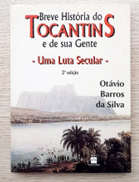

O livro Breve História do Tocantins e de sua Gente – Uma Luta Secular, de Otávio Barros da Silva, apresenta uma ampla pesquisa sobre a formação histórica do Tocantins, desde a ocupação territorial até os movimentos que, ao longo de mais de 180 anos, culminaram na criação do Estado. A obra resgata personalidades, tradições, aspectos antropológicos, linguísticos e socioeconômicos que marcaram a identidade tocantinense. A estrutura do livro percorre diferentes fases: os tempos coloniais, com destaque para as Entradas e Bandeiras; a Comarca do Norte de Goiás; a herança histórica da região; a Província da Palma; os movimentos políticos modernos e a criação do Estado; finalizando com uma reflexão sobre o Tocantins no século XXI.
